Licenca
To delo je na voljo pod pogoji slovenske licence Creative Commons 2.5:
priznanje avtorstva - nekomercialno - deljenje pod enakimi pogoji.
Celotna licenca je na voljo na spletu na naslovu http://creativecommons.org/licenses/by-nc-sa/2.5/si/. V skladu s to licenco je dovoljeno vsakemu uporabniku delo razmnoževati, distribuirati, javno priobčevati, dajati v najem in tudi predelovati, vendar samo v nekomercialne namene in ob pogoju, da navede avtorja oziroma avtorje in izdajatelja tega dela. Če uporabnik delo predela, kar pomeni, da ga spremeni, preoblikuje, prevede ali uporabi to delo v svojem delu, lahko predelavo dela ponudi na voljo le pod pogoji, ki so enaki pogojem iz te licence oziroma pod enako licenco.

Od zaporedja stavkov do programa
Eva se je odpravila na 30-kilometrsko kolesarsko pot. Ko je odšla od doma, je bila ura 16:35, ko se je vrnila, pa so kazalci kazali 18:05. Zanima jo, s kakšno povprečno hitrostjo (v km/h) je kolesarila, zato odpre interaktivni tolmač in svoje podatke najprej zapiše v spremenljivke:

Eva dobro ve, da se povprečna pot v km/h izračuna kot količnik prepotovane poti v kilometrih in porabljenega časa v urah. Dolžino poti pozna, za izračun porabe časa pa se mora malo potruditi. Najprej mora izračunati razliko med končno in začetno uro, nato pa še razliko med končno in začetno minuto. Porabo časa v minutah izračuna tako, da razliko v urah pomnoži s 60, k temu pa prišteje še razliko v minutah. Če rezultat deli s 60, dobi porabo časa v urah, ki jo potrebuje za izračun hitrosti:
Izpis:
1.5
Drži, kolesarila je natanko poldrugo uro, v kar se sicer zlahka prepriča tudi brez pomoči računalnika, kljub temu pa se ji zdi imenitno, da zna že toliko programirati. Do iskanega rezultata jo loči le še en preprost stavek:
Izpis:
20
Z drsniki spreminjaj dolžino poti ter uro začetka in konca. Povprečna hitrost se računa sproti. V ozadju se izvajajo prav takšni stavki, kot smo jih ravnokar zapisali.